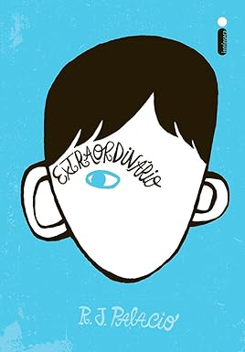

|
 |
ExtraordinárioAugust Pullman, o Auggie, nasceu com uma síndrome genética cuja sequela é uma severa deformidade facial, que lhe impôs diversas cirurgias e complicações médicas. Por isso ele nunca frequentou uma escola de verdade... até agora. Todo mundo sabe que é difícil ser um aluno novo, mais ainda quando se tem um rosto tão diferente. Prestes a começar o quinto ano em um colégio particular de Nova York, Auggie tem uma missão nada fácil pela frente: convencer os colegas de que, apesar da aparência incomum, ele é um menino igual a todos os outros. Narrado da perspectiva de Auggie e também de seus familiares e amigos, com momentos comoventes e outros descontraídos, Extraordinário consegue captar o impacto que um menino pode causar na vida e no comportamento de todos, família, amigos e comunidade - um impacto forte, comovente e, sem dúvida nenhuma, extraordinariamente positivo, que vai tocar todo tipo de leitor. |
| ★★★★★ Faixa etária: 12+ R$ 35,90 | |